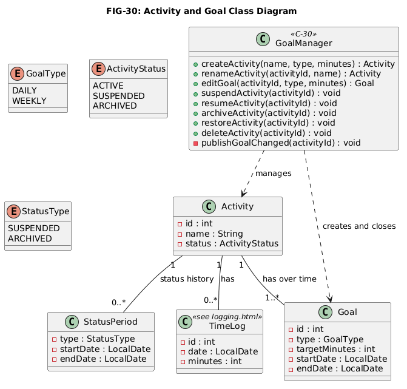
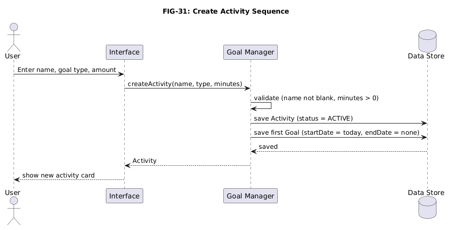
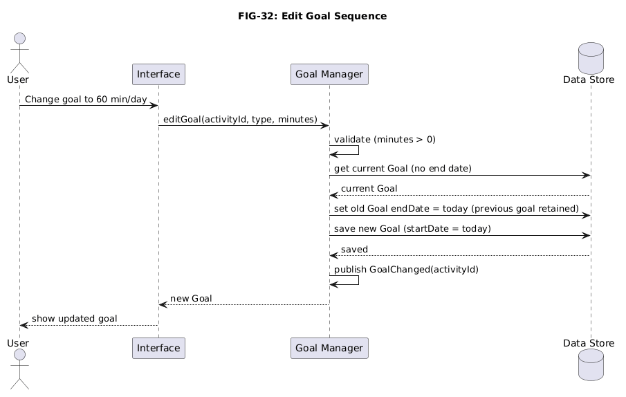
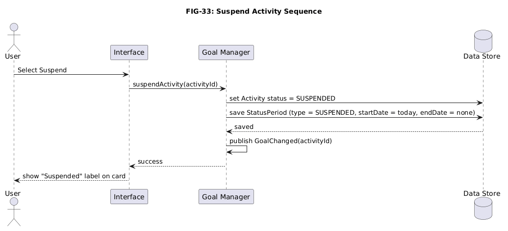
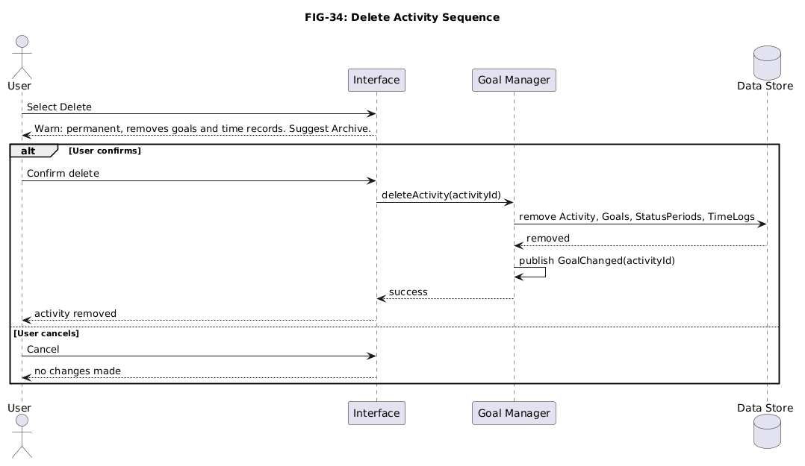

Activity & Goal Management
This page describes how TEMPO creates and changes activities and goals: how a goal is structured, how it repeats, what suspending, archiving and deleting mean, and how edits affect saved records.
1. Overview and Responsibilities
The Goal Manager (C-30) owns every change to activities and goals. It covers FR-01 to FR-08, FR-19 and FR-20. Time records are owned by the logging design, and progress calculations by the analytics design. Both read the activities and goals defined here.
1.1 Terms
In the interface, active activities appear as Dashboard cards showing their current goals (FIG-03), while the All Activities page lists all saved activities, including suspended and archived ones (FIG-04).An activity is defined as a personal objective such as Reading. A goal is defined as a daily or weekly time target for that activity. The current goal is the goal with no end date. Following FR-06 and FR-07, the status (active, suspended or archived) belongs to the activity and applies to its current goal.
2. Data Structure and Components
FIG-30 shows the classes managed by C-30. Field names and types match the Java notation used across the site. All durations are stored as whole minutes, and the interface formats them as minutes or hours (NFR-02). Each change of status is also saved as a dated StatusPeriod, so analytics can tell which days were suspended or archived.

2.1 Goal structure and recurrence
A goal has a type (daily or weekly), a positive target in minutes (FR-04), and a start and end date. A daily goal represents that much time each day. A weekly goal represents that much in total each week. There are no per-weekday targets. A goal repeats automatically from its start date until it is edited or the activity is archived, so nothing is re-created each period. Each goal version and the date it became current is retained (FR-05, FR-20). Whether a period was met is worked out from the saved time records and the goal in effect on that date. Weeks run Monday to Sunday, the same boundary used by analytics and charts (NFR-02).
2.2 Activity states
| State | Meaning | How it is stored |
|---|---|---|
| Active | Normal tracking. | Status ACTIVE, no open StatusPeriod. |
| Suspended | Time can still be logged. Suspended days are not counted as missed and are left out of averages and projections. Resuming returns to active. | Status SUSPENDED and an open StatusPeriod of type SUSPENDED (start date, no end date). |
| Archived | Hidden from active lists and read-only. History is kept and the activity can be restored (FR-19). | Status ARCHIVED and an open StatusPeriod of type ARCHIVED. |
| Deleted | Permanent. The activity, its goals, suspensions and time records are removed after confirmation. | Records removed. |
Suspended days do not count toward goal completion requirements. If an activity is suspended for part of a week, its weekly target is prorated according to the number of tracked days remaining in that week. Time recorded while suspended is still included in historical totals.
2.3 Effect of modifications on existing records
| Change | Effect |
|---|---|
| Rename activity (FR-03) | Only the name changes. Time records refer to the activity by ID, so all dates and durations are preserved. |
| Edit goal (FR-05) | The old goal gets an end date of today and a new goal starts today. Earlier periods keep their original target. The previous goal is retained (FR-05, FR-20). |
| Suspend / resume (FR-06) | Sets the status and adds or closes a StatusPeriod. Goals and time records are unchanged. |
| Archive / restore (FR-07) | Changes the status and adds or closes a StatusPeriod. Restoring returns the activity to active with its goals, goal history and time records intact (FR-19). Nothing is removed. |
| Delete (FR-08) | Removes the activity and everything attached to it. |
3. Component Interactions
The interface passes each user action to C-30, which validates it and saves the result through the data store described on the logging page. Analytics reads the saved goals and status periods by date (section 3.1); it never changes them.




3.1 Information provided to analytics
C-30 gives the analytics components (C-50 to C-56) the goal versions of an activity: interval, target in minutes, and the date each version became current (FR-20), together with the activity's StatusPeriod records so that suspended and archived days can be identified. After every goal revision, suspension, resume, archive, restore or delete, C-30 publishes a GoalChanged event so that outdated reports are discarded.
4. Requirements Mapping
| Requirement | Component | Decisions | Figures |
|---|---|---|---|
| FR-01 | C-30 (createActivity validation) | DD-33 | FIG-31 |
| FR-02 | C-30 (supplies activities and status to the interface) | DD-31, DD-33 | FIG-30 |
| FR-03 | C-30 (renameActivity) | DD-33 | FIG-30 |
| FR-04 | C-30 (goal type and target) | DD-32 | FIG-30, FIG-31 |
| FR-05 | C-30 (editGoal, keeps the previous goal) | DD-30, DD-32 | FIG-32 |
| FR-06 | C-30 (suspend, resume) | DD-31 | FIG-33 |
| FR-07 | C-30 (archiveActivity) | DD-31 | FIG-33 |
| FR-08 | C-30 (deleteActivity) | DD-31 | FIG-34 |
| FR-14 | C-30 (supplies the goal in effect for each period) | DD-30 | FIG-32 |
| FR-19 | C-30 (restoreActivity) | DD-31 | FIG-33 |
| FR-20 | C-30 (retains each goal version and its start date) | DD-30 | FIG-32 |
| NFR-01 | C-30 with the data store | DD-31 | FIG-30 |
| NFR-02 | C-30 (minutes, Monday week start) | DD-30, DD-32 | FIG-30 |
| NFR-03 | C-30 (two-setting goal) | DD-32, DD-34 | FIG-31 |
5. Design Rationale
DD-30: Editing a goal creates a new goal instead of overwriting the old one
Related requirements: FR-05, FR-14, FR-20, NFR-02
Decision: An edit gives the current goal an end date of today and saves a new goal starting today (FIG-32). The previous goal is kept with the date it became current (FR-05, FR-20).
Why: Past periods must be compared with the target that applied then (FR-14, FR-20). Overwriting would make every earlier day look incomplete after a target is raised from 30 to 60 minutes. The mechanism is only two date fields and one rule.
Alternatives: Overwriting can be simpler but rewrites history. Letting the user choose whether an edit applies to the past adds interface complexity and room for error.
Tradeoff: Slightly more storage and logic, since the goal in effect on a date must be looked up.
DD-31: An activity is active, suspended, archived or deleted
Related requirements: FR-02, FR-06, FR-07, FR-08, FR-19, NFR-01
Decision: Four states with the behavior in section 2.2. The status is stored on the activity, and each suspended or archived period is saved as a dated StatusPeriod. Restoring an archived activity returns it to active without removing anything (FR-19). Delete removes the activity, its goals and its time records after confirmation (FIG-33, FIG-34).
Why: Users stop for different reasons. These reasons include: a break (suspend), finishing but keeping the record (archive), or removing the data (delete). Separate actions mean users never lose data to tidy the screen, and the confirmation guards the one irreversible action (FR-08).
Alternatives: Only active and deleted would lose history. A separate soft delete duplicates archive. Blocking logging while suspended would turn away users who still log a little time.
Tradeoff: Analytics must skip suspended days and the interface needs controls for each action. Delete is irreversible, so it relies on the confirmation and on archive as the safe alternative.
DD-32: A goal is a type (daily or weekly) plus one target in minutes
Related requirements: FR-04, FR-05, FR-14, NFR-02, NFR-03
Decision: Every goal has a type and one positive target stored in minutes. It repeats until edited or archived (section 2.1).
Why: The dashboard wireframe shows one target per card, such as "Daily: 60 min" or "Weekly: 180 min". One type and one amount keeps setup to two choices (NFR-03) and gives progress calculations a single number per period. Minutes avoid unit ambiguity across reports (NFR-02).
Alternatives: A separate target per weekday is more flexible but has no place in the wireframe and complicates setup and calculations. Listed as a future extension. A daily and a weekly goal together conflicts with DD-33.
Tradeoff: "30 minutes on weekdays, 90 on weekends" can only be approximated with a weekly goal.
DD-33: An activity has many goals over time but only one current goal
Related requirements: FR-01, FR-02, FR-04, FR-05, FR-14, FR-20
Decision: Activity and goal are separate records. Creating an activity requires its first goal (FIG-31), and only the goal with no end date is current.
Why: Separate records let the target change while the activity and its time records stay the same (DD-30). One current goal means one unambiguous target, matching the one-goal-per-card layout.
Alternatives: Merging activity and goal would force a new activity, and a lost link to past logs, whenever a goal changes. Several current goals make progress ambiguous.
Tradeoff: A daily and a weekly target cannot be tracked for the same activity at once.
DD-34: Goal grouping is not supported in this version
Related requirements: NFR-03; system scope (Section 2, Overview & Requirements)
Decision: Activities are a flat list. Grouping is a possible future extension.
Why: Grouping would change the data model, group-level analytics and the dashboard, and the wireframe shows a flat list. The scope covers activity creation, goal management, time recording and progress reporting. Therefore grouping is not needed for any requirement.
Alternatives: Full groups add entities, calculations and screens. A basic category label still needs interface for choosing and filtering. It is the most likely first extension.
Tradeoff: Users with many activities see one long list and no combined totals.